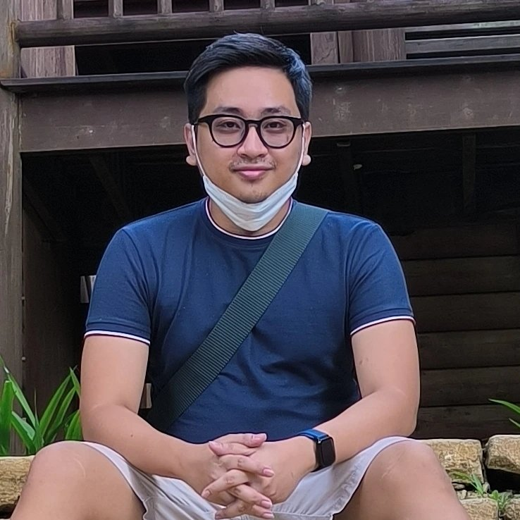

Self-introduction/Profile

- Name: Rafael Guevarra
- Age: 27
- Birthday: April 26, 1996
- Civil Status: Single
About Me
- Graduated Bachelor of Science in Information Technology Major in Web Development
- Worked in the BPO Industry for 6 years after graduating. A bit more than 2 years as a Customer Support Representative with Startek under a US Service Provider account and a bit more than 3 years with Topdata Global I.T. Solutions as a Technical Support for an well-known VPN service.
- You can add me on Facebook if you want to. My name on my Facebook account is Raffy Guevarra.
- After saving enough money to allow me to survive for a while and enroll here, I decided to go through with it so I can re-learn web development and pursue a career in the said field.
- I'm a dog person.